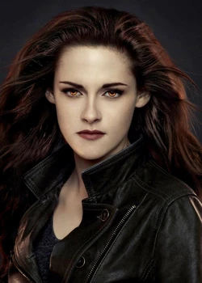
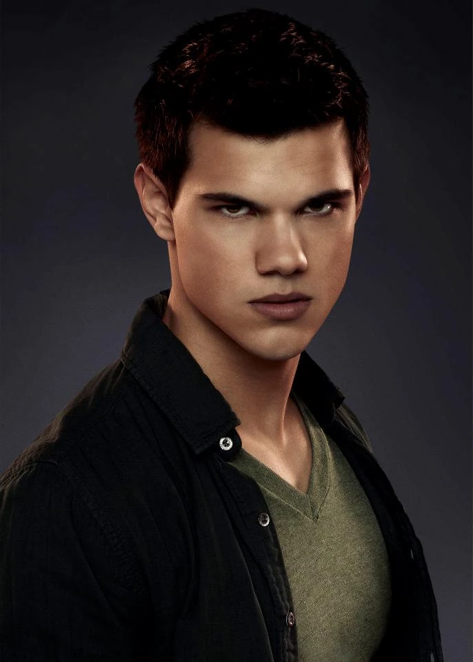

Edward Cullen nació como Edward Anthony Masen Jr. en 1901 en Chicago. A los 17 años, enfermó de gripe española y, cuando estaba al borde de la muerte, el doctor Carlisle Cullen lo convirtió en vampiro para salvarlo. Desde entonces, Edward ha vivido como parte de la familia Cullen, adoptando su estilo de vida de alimentarse solo de sangre animal.
Posee la habilidad de leer mentes, pero cuando conoce a Bella Swan, se da cuenta de que no puede escuchar sus pensamientos, lo que lo intriga y lo atrae profundamente. A pesar de su lucha interna por el peligro que representa para ella, terminan enamorándose.
A lo largo de la saga, Edward protege a Bella de amenazas como vampiros enemigos y los Vulturi, una poderosa familia de vampiros. Eventualmente, se casan y tienen una hija híbrida, Renesmee, lo que provoca un enfrentamiento con los Vulturi. Bella se convierte en vampira para salvar su vida, y juntos logran superar todos los peligros, encontrando la paz con su familia.
Isabella Swan

Isabella Marie Swan, conocida como Bella, nació el 13 de septiembre de 1987 en Forks, Washington, pero creció en Phoenix, Arizona, con su madre, Renée. A los 17 años, decide mudarse a Forks para vivir con su padre, Charlie Swan. Su vida cambia por completo cuando conoce a Edward Cullen, un misterioso compañero de escuela que resulta ser un vampiro.
Bella y Edward se enamoran rápidamente, pero su relación está llena de peligros, desde otros vampiros que quieren matarla hasta la decisión de Edward de dejarla en Luna Nueva para protegerla.
A pesar de los conflictos, Bella elige estar con Edward. En Amanecer, se casan y tienen una hija mitad humana y mitad vampira, Renesmee Cullen, lo que provoca la ira de los Vulturi. Para proteger a su familia, Bella es transformada en vampira y descubre que tiene un poder especial: un escudo mental que bloquea habilidades sobrenaturales.
Al final de la saga, Bella se adapta a su nueva vida como vampira y, junto con Edward, Renesmee y los Cullen, logra evitar la guerra con los Vulturi, asegurando un futuro en paz para su familia.
Jacob Black

Jacob Black nació el 14 de enero de 1990 en La Push, Washington. Es miembro de la tribu Quileute y el hijo menor de Billy Black, un viejo amigo de Charlie Swan, el padre de Bella. Al principio, Jacob es solo un chico amable y simpático que comparte historias sobre las leyendas de su tribu, incluyendo los mitos sobre los fríos (vampiros), sin saber que son reales.
Cuando Bella Swan regresa a Forks, Jacob desarrolla sentimientos por ella. En Luna Nueva, tras la partida de Edward, se acerca más a Bella y, sin saberlo, comienza su transformación en hombre lobo, un destino ligado a su linaje Quileute. Al convertirse en lobo, descubre que su tribu ha sido protectora de la zona contra los vampiros durante generaciones. Su transformación le da fuerza, velocidad y la capacidad de comunicarse mentalmente con su manada.
A lo largo de la saga, Jacob lucha con su amor por Bella y su odio hacia los vampiros, especialmente hacia Edward. Sin embargo, en Amanecer, después de que Bella y Edward tienen a su hija Renesmee, Jacob experimenta el fenómeno del imprinting (impronta) con la niña, lo que significa que su destino queda ligado a ella para protegerla y, en el futuro, convertirse en su pareja.
A pesar de su rivalidad inicial con Edward, Jacob se convierte en un aliado de los Cullen para defender a Renesmee de los Vulturi. Al final de la saga, acepta su destino junto a Renesmee y encuentra su lugar en la manada, logrando una tregua entre los lobos y los vampiros.